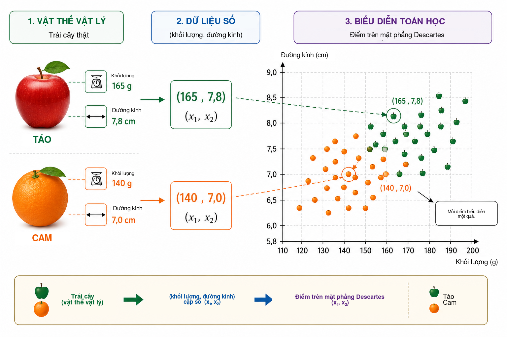
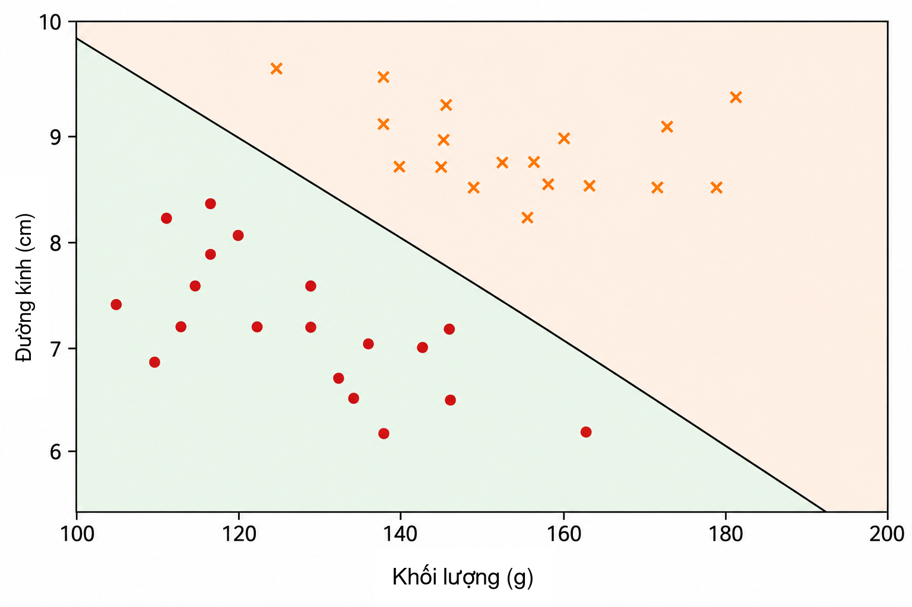
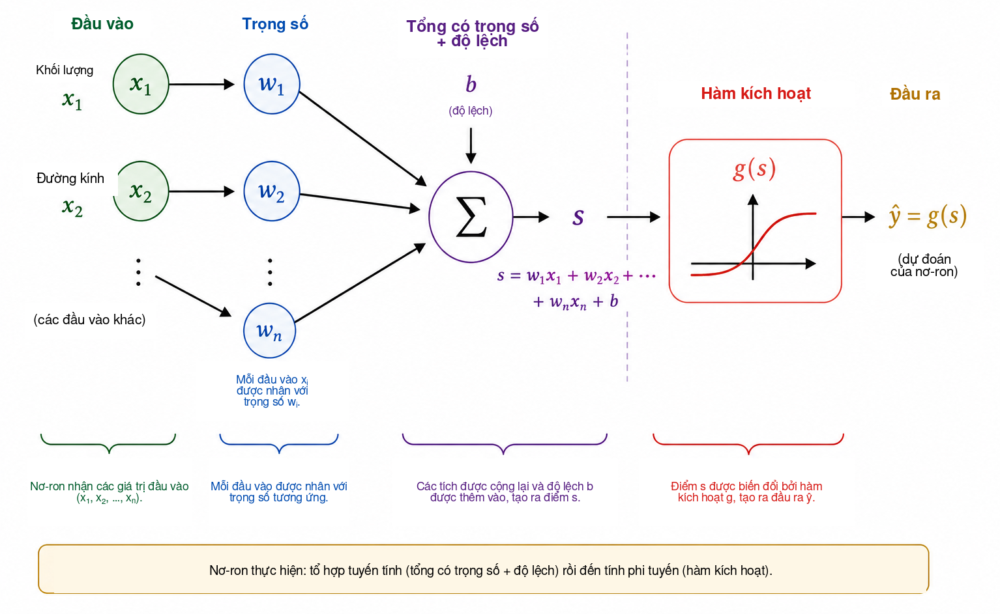
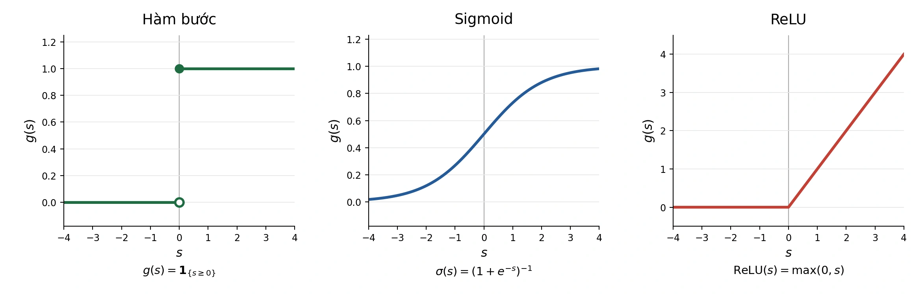
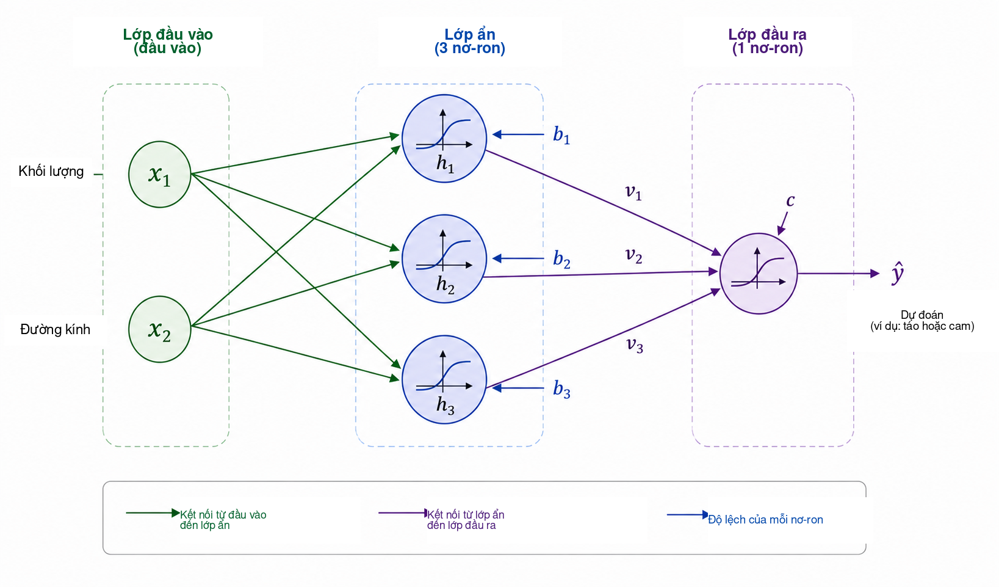
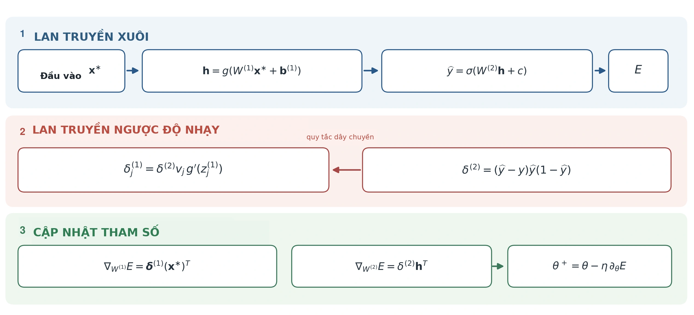
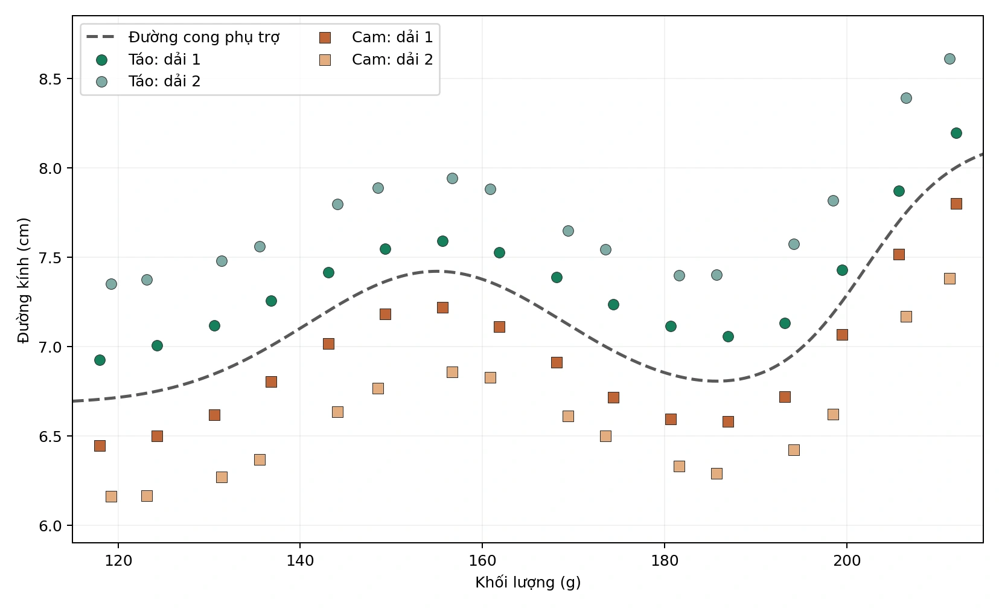
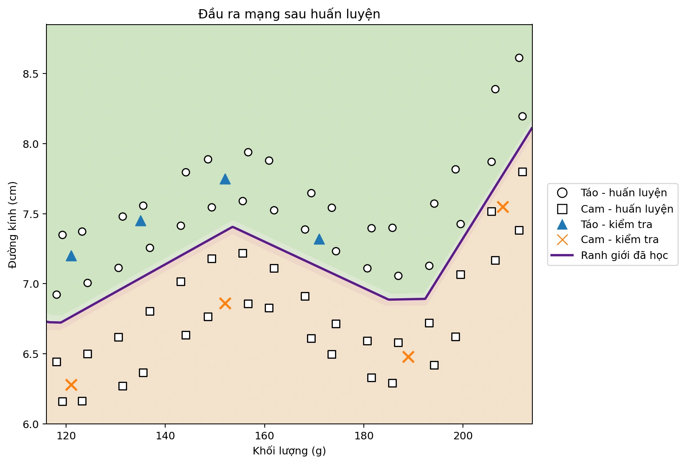

Khi nào máy tính có thể học?
Trong đời sống hằng ngày, chúng ta đưa ra các quyết định phân loại gần như không nhận ra. Nhìn một quả, ta nhanh chóng nhận biết đó là táo hay cam; khi một tin nhắn đến điện thoại, ta phân biệt cuộc trao đổi hợp lệ với quảng cáo không mong muốn; trong phân tích y khoa, nhiều phép đo có thể được kết hợp để hỗ trợ một quyết định; và tại các tổ chức tài chính, nhiều thông tin được đánh giá trước khi cấp tín dụng. Trong mọi ví dụ này, nhiều đặc trưng được xem xét đồng thời để tạo ra một câu trả lời.
Trong nhiều chương trình máy tính truyền thống, các quy tắc tạo ra câu trả lời được lập trình viên viết một cách tường minh. Cách tiếp cận này hoạt động tốt khi các quy tắc đã biết và có thể diễn đạt rõ ràng. Nó trở nên kém hiệu quả hơn khi dữ liệu biến thiên mạnh hoặc khi khó xác định trước mọi điều kiện cần thiết để đưa ra một quyết định tốt. Từ đây nảy sinh một câu hỏi tự nhiên:
Liệu ta có thể xây dựng một chương trình học quy tắc ra quyết định từ các ví dụ, thay vì phải được cung cấp sẵn các quy tắc đó hay không?
Đây là một trong những ý tưởng trung tâm của học máy, một lĩnh vực của trí tuệ nhân tạo nghiên cứu các phương pháp điều chỉnh mô hình dựa trên dữ liệu . Trong bài toán học có giám sát, thuật toán nhận các ví dụ kèm theo đáp án đúng, và ta tìm một mô hình cũng có khả năng đưa ra các dự đoán hữu ích cho những trường hợp không được dùng trong quá trình huấn luyện. Trong số nhiều mô hình được phát triển cho mục đích này, mạng nơ-ron nhân tạo trở nên quan trọng trong các ứng dụng như nhận dạng ảnh, xử lý ngôn ngữ, phân tích tín hiệu và dự báo chuỗi thời gian .
Việc sử dụng mạng nơ-ron như một cầu nối giữa toán học, tính toán và giáo dục phổ thông đã được Batista và Martins thảo luận trên Professor de Matemática Online, với các hoạt động liên quan đến đào tạo giáo viên, Python và nhận dạng chữ số. Bài báo này đi theo một hướng bổ sung. Mục tiêu chính của chúng tôi là làm rõ toán học bên trong một mạng nơ-ron nhỏ, bắt đầu từ hình học giải tích và tiến từng bước đến việc tính gradient và cài đặt lan truyền ngược bằng tay.
Mặc dù các ứng dụng hiện đại có vẻ rất tinh vi, cốt lõi toán học của mạng nơ-ron có thể được giới thiệu bằng những ý tưởng tương đối quen thuộc. Ở mức cơ bản, một mạng nơ-ron là hợp của các hàm có tham số được điều chỉnh từ dữ liệu. Ta bắt đầu với một bài toán hình học đơn giản, diễn giải lại một đường phân cách như một nơ-ron nhân tạo, nối nhiều nơ-ron với nhau, nghiên cứu vai trò của hàm kích hoạt và chỉ ra cách dùng đạo hàm để tự động điều chỉnh các tham số của mạng. Sau đó, ta cài đặt một ví dụ nhỏ hoàn chỉnh bằng Python, duy trì mối liên hệ trực tiếp giữa các phương trình và mã lệnh.
Biểu diễn bài toán bằng toán học
Để hiểu mạng nơ-ron hoạt động như thế nào, ta bắt đầu với một bài toán cố ý được đơn giản hóa: phân biệt táo với cam. Một quả có nhiều đặc trưng có thể hữu ích cho nhiệm vụ này, chẳng hạn màu sắc, khối lượng, đường kính, kết cấu và mùi. Tuy nhiên, mô hình toán học ban đầu không cần chứa toàn bộ sự phức tạp đó. Ta chỉ sử dụng hai đại lượng dễ đo: khối lượng, tính bằng gam, và đường kính, tính bằng xentimét.
Mỗi quả sẽ được biểu diễn bởi cặp có thứ tự \[(x_1,x_2),\] với \[x_1=\text{khối lượng} \qquad\text{và}\qquad x_2=\text{đường kính}.\]
Vì vậy, cặp \((155,\;7.2)\) biểu diễn một quả có khối lượng \(155\) g và đường kính \(7.2\) cm. Khi thay một vật thể vật lý bằng hai phép đo số, ta gắn mỗi quả với một điểm trên mặt phẳng Descartes: tọa độ thứ nhất biểu diễn khối lượng và tọa độ thứ hai biểu diễn đường kính. Hình 1 minh họa cách biểu diễn này cho một tập giả định gồm táo và cam.

Phép biến đổi này thay đổi cách ta nhìn bài toán. Thay vì hỏi trực tiếp làm thế nào để nhận biết táo hay cam, ta có thể đặt một câu hỏi hình học: làm thế nào để tách các điểm thuộc hai lớp trên mặt phẳng? Sự thay đổi góc nhìn này là nền tảng trong học máy. Ảnh, văn bản, âm thanh và tín hiệu thí nghiệm đều phải được chuyển thành biểu diễn số trước khi thuật toán có thể xử lý. Trong ví dụ của ta, mỗi đối tượng chỉ có hai tọa độ; trong các ứng dụng thực tế, một biểu diễn có thể chứa hàng trăm, hàng nghìn, thậm chí hàng triệu thành phần. Nguyên lý vẫn như nhau: mỗi ví dụ được gắn với một tập số, và mô hình tìm một quy tắc ánh xạ biểu diễn đó tới câu trả lời mong muốn.
Ta bắt đầu với quy tắc hình học đơn giản nhất và hỏi liệu một đường thẳng duy nhất có thể tách các điểm táo khỏi các điểm cam đủ tốt hay không.
Đường thẳng như một bộ phân loại
Sau khi mỗi quả được biểu diễn thành một điểm trên mặt phẳng Descartes, phân loại trở thành một bài toán hình học: liệu một đường thẳng có thể tách táo khỏi cam hay không? Câu hỏi này chứa đựng ý tưởng cơ bản của một họ phương pháp học máy quan trọng, gọi là bộ phân loại tuyến tính.
Xét một đường thẳng đi qua tập dữ liệu như trong Hình 2. Đường này chia mặt phẳng thành hai nửa mặt phẳng. Nếu phần lớn các điểm táo nằm ở một phía và phần lớn các điểm cam nằm ở phía kia, vị trí của một quả mới đối với đường thẳng có thể được dùng làm quy tắc phân loại. Sau khi đo khối lượng và đường kính, ta biểu diễn quả đó thành một điểm và xác định điểm nằm ở phía nào của đường thẳng.

Trên mặt phẳng Descartes \((x_1,x_2)\), một đường thẳng có thể được mô tả bởi \[w_1x_1+w_2x_2+b=0, \qquad (w_1,w_2)\neq(0,0).\]
Vectơ \((w_1,w_2)\) vuông góc với đường thẳng và do đó xác định hướng của nó, trong khi tham số \(b\) góp phần xác định vị trí. Biểu diễn này có một mức dư thừa nhỏ: nhân đồng thời \(w_1\), \(w_2\) và \(b\) với cùng một hằng số khác không tạo ra chính xác cùng một đường thẳng. Do đó, các tham số mô tả ranh giới không phải là duy nhất. Cách diễn giải số của chúng cũng phụ thuộc vào thang đo của các biến. Vì khối lượng được đo bằng gam và đường kính bằng xentimét, không nên so sánh trực tiếp độ lớn số của \(w_1\) và \(w_2\) mà không xét đến sự khác biệt về đơn vị.
Bản thân phương trình đường thẳng cung cấp một cách đơn giản để xác định một điểm nằm ở phía nào của ranh giới. Định nghĩa điểm số \[s(x_1,x_2)=w_1x_1+w_2x_2+b.\]
Nếu \(s(x_1,x_2)=0\), điểm nằm đúng trên đường thẳng. Nếu \(s(x_1,x_2)>0\), điểm nằm trong một nửa mặt phẳng; nếu \(s(x_1,x_2)<0\), điểm nằm trong nửa mặt phẳng kia. Nếu ta quy ước điểm số dương tương ứng với táo và điểm số âm tương ứng với cam, quy tắc trở thành \[\begin{cases} s(x_1,x_2)\geq 0 & \Longrightarrow \text{táo},\\ s(x_1,x_2)<0 & \Longrightarrow \text{cam}. \end{cases}\]
Ví dụ, xét ranh giới được xác định bởi \[w_1=\frac{1}{10}, \qquad w_2=2, \qquad b=-30.\] Với một quả có khối lượng \(160\) g và đường kính \(7.8\) cm, \[\begin{aligned} s &=\frac{1}{10}\times160+2\times7.8-30\\ &=16+15.6-30\\ &=1.6. \end{aligned}\] Vì điểm số dương, điểm nằm trong nửa mặt phẳng mà ta gắn với táo. Vì vậy bộ phân loại này sẽ gán nhãn quả đó là táo.
Không phải mọi lựa chọn của \(w_1\), \(w_2\) và \(b\) đều cho một phép phân loại tốt. Một số đường tách hai nhóm kém, trong khi những đường khác tạo ra ít sai sót hơn. Bài toán học chính là sử dụng các ví dụ đã gán nhãn để xác định các giá trị tham số làm giảm một thước đo sai số của mô hình. Thay vì lập trình trực tiếp vị trí của đường, ta muốn thuật toán điều chỉnh các hệ số dựa trên dữ liệu.
Một đường duy nhất có thể hoạt động tốt khi các lớp gần như phân tách tuyến tính. Những tập dữ liệu phức tạp hơn có thể đòi hỏi ranh giới phi tuyến. Trước khi bàn về giới hạn đó, ta diễn giải lại bộ phân loại vừa xây dựng như một đơn vị tính toán cơ bản: một nơ-ron nhân tạo.
Nơ-ron nhân tạo
Trong phần trước, biểu thức \[s=w_1x_1+w_2x_2+b\] được dùng để xác định một quả nằm ở phía nào của đường thẳng. Cùng biểu thức đó có thể được xem như bước đầu tiên của phép tính do một nơ-ron nhân tạo thực hiện. Một nơ-ron nhận các đầu vào số, kết hợp chúng bằng trọng số và độ lệch, rồi áp dụng một hàm toán học để thu được đầu ra.
Trong ví dụ của ta, các đầu vào là khối lượng \(x_1\) và đường kính \(x_2\). Mỗi đầu vào được nhân với một tham số gọi là trọng số; các tích được cộng với số hạng hằng \(b\), gọi là độ lệch (bias). Hình 3 minh họa sơ đồ phép tính này.

Các trọng số xác định cách những thay đổi ở đầu vào ảnh hưởng đến điểm số. Nếu giữ \(x_2\) và mọi đại lượng khác cố định, thay đổi \(\Delta x_1\) làm \(s\) thay đổi một lượng \(w_1\Delta x_1\). Tương tự, thay đổi \(\Delta x_2\) làm điểm số thay đổi \(w_2\Delta x_2\). Dấu của trọng số cũng quan trọng: trọng số dương khiến đầu vào tăng thì điểm số tăng, còn trọng số âm tạo hiệu ứng ngược lại. Cách diễn giải này cần thận trọng khi các biến có đơn vị và thang đo khác nhau. Vì lý do đó, các cài đặt thực tế thường chuẩn hóa hoặc tiêu chuẩn hóa dữ liệu đầu vào trước khi huấn luyện.
Độ lệch \(b\) là số hạng hằng trong phép biến đổi affine. Về hình học, độ lệch cho phép ranh giới quyết định dịch chuyển. Nếu \(b=0\), phương trình \[w_1x_1+w_2x_2=0\] buộc đường thẳng đi qua gốc tọa độ. Khi có độ lệch, ranh giới có thể chuyển sang vị trí khác. Tương đương, khi \(x_1=x_2=0\), điểm số đơn giản là \(s=b\).
Điểm số không nhất thiết phải là đầu ra cuối cùng của nơ-ron. Nói chung, một hàm kích hoạt \(g\) được áp dụng lên điểm số: \[\widehat{y}=g(s)=g\left(w_1x_1+w_2x_2+b\right).\] Do đó, phép tính có hai bước, \[\begin{aligned} s &= w_1x_1+w_2x_2+b,\\[4pt] \widehat{y} &= g(s). \end{aligned}\]
Với các giá trị tham số ở phần trước, ta thu được \(s=1.6\). Nếu chọn hàm bậc thang \[g(s)= \begin{cases} 1, & s\geq0,\\ 0, & s<0, \end{cases}\] thì \(\widehat{y}=g(1.6)=1\). Theo quy ước của ta, quả đó được phân loại là táo. Với hàm kích hoạt này, quyết định thay đổi khi \(s\) đi qua 0, nên ranh giới lớp chính xác được cho bởi \[w_1x_1+w_2x_2+b=0.\]
Vì vậy, một nơ-ron đơn lẻ là một đối tượng toán học đơn giản có các tham số có thể điều chỉnh. Ý nghĩa thực sự xuất hiện khi nhiều đơn vị như vậy được nối với nhau. Tuy nhiên, trước khi xây dựng mạng, ta cần hiểu vì sao hàm kích hoạt lại quan trọng đến vậy.
Tại sao cần hàm kích hoạt?
Một nơ-ron trước hết tính một điểm số thông qua phép biến đổi affine, rồi áp dụng hàm kích hoạt. Bước thứ hai này rất quan trọng để mạng nơ-ron có thể biểu diễn các quan hệ phức tạp. Để thấy lý do, hãy tưởng tượng một mạng không có hàm kích hoạt. Mỗi đơn vị sẽ có dạng \[y=w_1x_1+w_2x_2+b.\]
Để minh họa trong một chiều, giả sử đơn vị thứ nhất cho \[h=ax+b\] và đơn vị thứ hai tính \[y=ch+d.\] Thay vào ta được \[y=c(ax+b)+d=acx+(cb+d),\] vẫn là một hàm affine của \(x\). Điều tương tự đúng trong nhiều chiều: hợp của các phép biến đổi affine vẫn là một phép biến đổi affine. Vì thế, thêm nhiều lớp nhưng không có phép toán phi tuyến không làm mạng trở nên biểu đạt hơn về bản chất; toàn bộ phép hợp có thể được thay bằng một phép biến đổi affine duy nhất.
Hàm kích hoạt phá vỡ giới hạn này. Sau khi tính điểm số \(s\), nơ-ron áp dụng một ánh xạ thường là phi tuyến \[h=g(s).\] Khi nhiều đơn vị như vậy được nối với nhau, phép hợp thu được không còn có thể rút gọn thành một phép biến đổi affine duy nhất. Điều này cho phép mạng xây dựng những ranh giới quyết định phức tạp hơn.
Hàm kích hoạt đơn giản nhất là hàm bậc thang, \[g(s)= \begin{cases} 1, & s\geq0,\\ 0, & s<0. \end{cases}\] Hàm này tạo ra quyết định nhị phân và rất hữu ích để hiểu phân loại. Tuy nhiên, đạo hàm của nó bằng 0 khi \(s\neq0\) và không xác định tại \(s=0\). Vì huấn luyện dựa trên gradient dùng đạo hàm để xác định các tham số cần thay đổi như thế nào, hàm bậc thang không phù hợp với cơ chế huấn luyện đó.
Một lựa chọn thay thế là hàm sigmoid, \[\sigma(s)=\frac{1}{1+e^{-s}}.\] Hàm này ánh xạ mọi số thực vào một giá trị nằm nghiêm ngặt giữa \(0\) và \(1\). Với \(s\) rất âm, đầu ra tiến gần \(0\); với \(s\) rất dương, đầu ra tiến gần \(1\); giữa hai trạng thái này, chuyển tiếp diễn ra trơn tru. Sigmoid khả vi tại mọi điểm, với \[\sigma'(s)=\sigma(s)\bigl(1-\sigma(s)\bigr).\] Vì đầu ra nằm giữa \(0\) và \(1\), sigmoid thường được dùng ở lớp đầu ra của bộ phân loại nhị phân. Trong một mô hình xác suất với hàm mất mát phù hợp, đầu ra có thể được diễn giải như một ước lượng xác suất của lớp được biểu diễn bởi \(1\). Tuy nhiên, ở các lớp ẩn, sigmoid có thể gây khó khăn: với đầu vào có độ lớn lớn, đạo hàm trở nên rất nhỏ, góp phần gây ra hiện tượng gradient biến mất trong các mạng sâu.
Một hàm kích hoạt thường dùng ở lớp ẩn là ReLU (Rectified Linear Unit), \[\operatorname{ReLU}(s)=\max(0,s) = \begin{cases} 0, & s<0,\\ s, & s\geq0. \end{cases}\] Mặc dù được ghép từ hai đoạn tuyến tính, ReLU không tuyến tính trên toàn miền. Đạo hàm bằng \(0\) khi \(s<0\) và bằng \(1\) khi \(s>0\). Tại \(s=0\), đạo hàm thông thường không tồn tại và các cài đặt phần mềm dùng một quy ước cho gradient. Với đầu vào dương, đạo hàm không co nhỏ khi \(s\) tăng, nhờ đó tránh được một trong các cơ chế bão hòa của sigmoid.
Hình 4 so sánh trực quan ba hàm kích hoạt này: bước nhảy đột ngột của hàm bậc thang, chuyển tiếp trơn của sigmoid và sự thay đổi độ dốc của ReLU.

Các tính chất chính được tóm tắt dưới đây.
| Hàm | Đầu ra | Đạo hàm | Cách dùng phổ biến |
|---|---|---|---|
| Bậc thang | \(\{0,1\}\) | Bằng 0 với \(s\neq0\); không xác định tại \(s=0\) | Các mô hình lịch sử và ví dụ sư phạm |
| Sigmoid | \((0,1)\) | Tồn tại với mọi \(s\) | Lớp đầu ra trong phân loại nhị phân |
| ReLU | \([0,\infty)\) | \(0\) khi \(s<0\) và \(1\) khi \(s>0\) | Các lớp ẩn |
Chi tiết của ba hàm là khác nhau, nhưng chúng có cùng một vai trò khái niệm: đưa tính phi tuyến vào mô hình. Chính tính phi tuyến này cho phép mạng nhỏ ở phần tiếp theo biểu diễn các quan hệ mà một đường thẳng duy nhất không thể nắm bắt.
Đối với độc giả muốn đi xa hơn, Haykin trình bày một thảo luận kinh điển về mạng nơ-ron, trong khi Goodfellow, Bengio và Courville bàn về các hàm kích hoạt và việc huấn luyện mạng sâu trong một bối cảnh rộng hơn. Văn bản truy cập tự do của Nielsen đặc biệt dễ tiếp cận để phát triển trực giác về nơ-ron, hàm kích hoạt và quá trình học.
Xây dựng một mạng nơ-ron nhỏ
Bây giờ ta xét một mạng có hai đầu vào, một lớp ẩn gồm ba nơ-ron và một nơ-ron đầu ra. Các đầu vào vẫn là \[x_1=\text{khối lượng}, \qquad x_2=\text{đường kính},\] và cả hai được đưa vào mỗi nơ-ron ẩn, như minh họa trong Hình 5.

Giả sử các đầu ra của lớp ẩn là \(h_1\), \(h_2\) và \(h_3\). Mỗi nơ-ron nhận cùng hai đầu vào nhưng có các trọng số và độ lệch riêng: \[\begin{aligned} h_1&=g\left(w_{11}x_1+w_{12}x_2+b_1\right),\\[4pt] h_2&=g\left(w_{21}x_1+w_{22}x_2+b_2\right),\\[4pt] h_3&=g\left(w_{31}x_1+w_{32}x_2+b_3\right). \end{aligned}\]
Mặc dù ba nơ-ron nhận cùng khối lượng và đường kính, chúng có thể tạo ra các phản hồi khác nhau vì các tham số khác nhau. Trong quá trình huấn luyện, các tham số này được điều chỉnh để các kích hoạt trung gian trở nên hữu ích cho việc phân loại.
Ba đại lượng \(h_1\), \(h_2\) và \(h_3\) sau đó được truyền tới nơ-ron đầu ra, nơ-ron này tính \[s_{\mathrm{out}}=v_1h_1+v_2h_2+v_3h_3+c\] và tạo ra \[\widehat{y}=g_{\mathrm{out}}\left(s_{\mathrm{out}}\right).\] Đối với bài toán nhị phân của ta, đầu ra sigmoid được dùng: \[\widehat{y}=\sigma\left(v_1h_1+v_2h_2+v_3h_3+c\right), \qquad 0<\widehat{y}<1.\]
Với quy ước \(y=1\) cho táo và \(y=0\) cho cam, ngưỡng \(0.5\) cho quyết định lớp \[\widehat{y}\geq0.5 \Longrightarrow \text{táo}, \qquad \widehat{y}<0.5 \Longrightarrow \text{cam}.\] Do đó, các giá trị gần \(1\) gắn mạnh với táo, còn các giá trị gần \(0\) gắn với cam. Như đã lưu ý, diễn giải \(\widehat{y}\) theo nghĩa số như một xác suất đòi hỏi thêm các giả thiết về mô hình và quá trình huấn luyện. Với quy tắc phân loại dùng ở đây, chỉ cần xem \(\widehat{y}\) là đầu ra liên tục của mạng.
Đặc điểm chính của kiến trúc này là biểu diễn trung gian \[(x_1,x_2) \longrightarrow (h_1,h_2,h_3) \longrightarrow \widehat{y}.\] Mạng nhận hai đặc trưng và xây dựng ba đại lượng mới trước khi tạo ra câu trả lời cuối cùng. Các kích hoạt này không được chọn thủ công: giá trị của chúng phụ thuộc vào trọng số và độ lệch, vì thế thay đổi khi các tham số được huấn luyện.
Dù nhỏ, mạng này đã có mười ba tham số có thể điều chỉnh. Ba nơ-ron ẩn chứa \[3(2+1)=9\] tham số, và nơ-ron đầu ra thêm \[3+1=4.\] Do đó, \[9+4=13.\]
Phép đếm tương tự trở nên rõ hơn trong ký hiệu ma trận. Định nghĩa \[\mathbf{x}= \begin{bmatrix} x_1\\x_2 \end{bmatrix}, \qquad W^{(1)}= \begin{bmatrix} w_{11}&w_{12}\\ w_{21}&w_{22}\\ w_{31}&w_{32} \end{bmatrix}, \qquad \mathbf{b}^{(1)}= \begin{bmatrix} b_1\\b_2\\b_3 \end{bmatrix}.\] Khi đó lớp ẩn có thể được viết gọn là \[\mathbf{h}=g\left(W^{(1)}\mathbf{x}+\mathbf{b}^{(1)}\right),\] trong đó \(g\) tác động theo từng thành phần. Với đầu ra, \[\widehat{y} = \sigma\left(W^{(2)}\mathbf{h}+b^{(2)}\right),\] với \[W^{(2)}= \begin{bmatrix} v_1&v_2&v_3 \end{bmatrix}.\]
Ký hiệu này báo trước cấu trúc sẽ xuất hiện trong chương trình Python. Khi một quả được đưa vào đầu vào và ta tính lần lượt các kích hoạt cho đến khi thu được \(\widehat{y}\), ta thực hiện lan truyền tiến hay forward pass. Câu hỏi chính vẫn như cũ: làm thế nào để tự động xác định mười ba tham số sao cho các dự đoán phù hợp với dữ liệu?
Mạng nơ-ron học như thế nào?
Trọng số và độ lệch (bias) của mạng không được biết trước: chúng được điều chỉnh từ các ví dụ có nhãn lớp đã biết. Huấn luyện lặp lại lan truyền xuôi, tính hàm mất mát, xác định gradient và cập nhật tham số (Hình 6). Quy tắc dây chuyền cho biết ảnh hưởng cục bộ của từng trọng số và bias lên mất mát. Để điều chỉnh tham số, trước hết cần một thước đo bằng số cho độ chênh lệch giữa dự đoán và đáp án. Hàm mất mát gán mức phạt cho mỗi dự đoán, cho phép so sánh các bộ tham số. Khác với việc chỉ đếm lỗi phân loại, mất mát liên tục phân biệt các khoảng cách tới nhãn đúng và cung cấp đạo hàm định hướng huấn luyện. Xét một quả cam có khối lượng \(140\) g, đường kính \(7.0\) cm (\(y=0\)). Với đầu ra \(\widehat y\in(0,1)\), mất mát bình phương cho một mẫu là
\[\label{eq:perda} E=\frac12(\widehat y-y)^2.\]
Ở đây \(y\) là nhãn thật và \(\widehat y\) là dự đoán. Mất mát không âm và bằng không khi dự đoán trùng nhãn. Với một quả cam, dự đoán \(0.80\) và \(0.60\) cho \(E=0.32\) và \(E=0.18\). Cả hai đều sai khi dùng ngưỡng \(0.5\), nhưng giá trị mất mát phản ánh độ lệch. Hệ số \(1/2\) không thay đổi cực tiểu và giúp đạo hàm gọn hơn. Với \(N\) mẫu huấn luyện, ta định nghĩa mất mát trung bình
\[\label{eq:perda_media} J=\frac1N\sum_{i=1}^{N}E_i.\]
Đại lượng trung bình này thể hiện độ khớp trên tập huấn luyện. Giảm \(J\) không tự bảo đảm độ chính xác trên dữ liệu mới. Chúng ta dùng mất mát bình phương vì phép biến đổi đại số đơn giản và so sánh gradient của nó với entropy chéo nhị phân mà không thay đổi thí nghiệm số [2, 3].

Nếu \(\theta\) là trọng số hoặc bias, đạo hàm \(\partial J/\partial\theta\) đo độ nhạy cục bộ của mất mát trung bình theo tham số đó. Một bước hạ gradient được viết là
\[\label{eq:descida} \theta_{\mathrm{new}}=\theta_{\mathrm{old}}-\eta\frac{\partial J}{\partial\theta},\qquad \eta>0.\]
Tốc độ học \(\eta\) quyết định độ lớn bước: quá nhỏ có thể làm hội tụ chậm, quá lớn có thể gây dao động hoặc phân kỳ. Nếu cập nhật sau mỗi mẫu (Mục 8), thay \(\partial J/\partial\theta\) bằng \(\partial E_i/\partial\theta\). Đây là hạ gradient ngẫu nhiên (SGD) được dùng ở đây.
Quy tắc dây chuyền trong mạng 2–3–1
Xét mạng ở Hình [fig:pequena_rede] với ba nơ-ron ẩn dùng ReLU và nơ-ron đầu ra dùng sigmoid. Khối lượng (g) và đường kính (cm) có các thang số khác nhau, có thể làm xấu điều kiện của bài toán tối ưu. Ta chuẩn hóa từng đặc trưng theo \(x_j^\ast=(x_j-\mu_j)/\sigma_j\), trong đó \(\mu_j\) và \(\sigma_j>0\) là trung bình và độ lệch chuẩn tham chiếu. Nhờ vậy đầu vào không thứ nguyên và có thang tương đương. Trong thí nghiệm tính toán, hai thống kê chỉ được tính từ tập huấn luyện, tránh rò rỉ thông tin từ tập kiểm tra. Ở ví dụ tính tay dưới đây, chọn trước các tâm và thang chỉ để đơn giản hóa. Với \(\mathbf{x}^\ast=(x_1^\ast,x_2^\ast)^{\mathsf T}\), lan truyền xuôi là
\[\label{eq:forward} \begin{aligned} \mathbf{z}^{(1)}&=W^{(1)}\mathbf{x}^{\ast}+\mathbf{b}^{(1)}, &\mathbf{h}&=\operatorname{ReLU}(\mathbf{z}^{(1)}),\\ z^{(2)}&=W^{(2)}\mathbf{h}+c, &\widehat y&=\sigma(z^{(2)}). \end{aligned}\]
Ở đây \(c=b^{(2)}\) là bias đầu ra và \(W^{(2)}=(v_1,v_2,v_3)\). Lan truyền ngược bắt đầu ở nơ-ron đầu ra bằng cách áp dụng liên tiếp quy tắc dây chuyền:
\[\label{eq:delta_saida} \begin{aligned} \delta^{(2)}:=\frac{\partial E}{\partial z^{(2)}} &=\underbrace{\frac{\partial E}{\partial\widehat y}}_{\widehat y-y} \underbrace{\frac{\partial\widehat y}{\partial z^{(2)}}}_{\widehat y(1-\widehat y)} =(\widehat y-y)\widehat y(1-\widehat y),\\ \frac{\partial E}{\partial v_j}&=\delta^{(2)}h_j, \qquad \frac{\partial E}{\partial c}=\delta^{(2)}. \end{aligned}\]
Vì mỗi kích hoạt ẩn \(h_j\) cũng phụ thuộc vào trọng số và bias tương ứng, ta tính các độ nhạy của lớp ẩn:
\[\label{eq:delta_oculta} \begin{aligned} \delta_j^{(1)}:=\frac{\partial E}{\partial z_j^{(1)}} &=\delta^{(2)}v_j\,\operatorname{ReLU}'(z_j^{(1)}),\\ \frac{\partial E}{\partial w_{jk}} &=\delta_j^{(1)}x_k^{\ast},\qquad \frac{\partial E}{\partial b_j}=\delta_j^{(1)}. \end{aligned}\]
ReLU không khả vi tại không; trong tính toán, ta quy ước \(\operatorname{ReLU}'(0)=0\). Các đại lượng \(\delta^{(2)}\) và \(\delta_j^{(1)}\) là độ nhạy cục bộ của mất mát, không phải tín hiệu lỗi vật lý truyền qua mạng. Tái sử dụng chúng cho phép tính đủ mười ba gradient mà không phải lấy đạo hàm riêng từ đầu cho từng trọng số.
Một bước cập nhật tham số bằng số đầy đủ
Chỉ trong ví dụ này, ta chọn tâm khối lượng \(160\) g, thang \(20\) g; tâm đường kính \(7.5\) cm, thang \(0.5\) cm. Trái cây \((140\,\mathrm{g},7.0\,\mathrm{cm})\) ứng với đầu vào không thứ nguyên
\[\label{eq:exemplo_entrada} \mathbf{x}^{\ast}=\begin{bmatrix}(140-160)/20\\(7.0-7.5)/0.5\end{bmatrix} =\begin{bmatrix}-1\\-1\end{bmatrix}.\]
Các giá trị tham chiếu này chỉ dùng để minh họa; trong Mục 8, trung bình và độ lệch chuẩn được tính trực tiếp từ tập huấn luyện. Chọn mười ba tham số ban đầu:
\[\label{eq:param_iniciais} W^{(1)}=\begin{bmatrix} 0.2&0.1\\-0.3&0.2\\0.1&-0.4 \end{bmatrix},\quad \mathbf{b}^{(1)}=\begin{bmatrix}\phantom{-}0.5\\\phantom{-}0.2\\-0.5\end{bmatrix},\quad W^{(2)}=\begin{bmatrix}\phantom{-}0.5&-0.4&\phantom{-}0.3\end{bmatrix},\quad c=1.\]
Từ phương trình forward, lần lượt có
\[\label{eq:exemplo_forward} \begin{gathered} \mathbf{z}^{(1)}=(0.2,\;0.3,\;-0.2)^{\mathsf T},\qquad \mathbf{h}=(0.2,\;0.3,\;0)^{\mathsf T},\\ z^{(2)}=0.5(0.2)-0.4(0.3)+1=0.98,\\ \widehat y=\sigma(0.98)\simeq0.727108,\qquad E\simeq0.264343. \end{gathered}\]
Dự đoán ban đầu thuộc lớp sai. Từ các phương trình delta_saida và delta_oculta, ta nhận được
\[\label{eq:exemplo_gradientes} \begin{gathered} \delta^{(2)}\simeq0.144274,\qquad \boldsymbol{\delta}^{(1)}\simeq(0.072137,\;-0.057710,\;0)^{\mathsf T},\\ \frac{\partial E}{\partial W^{(2)}}\simeq (0.028855,\;0.043282,\;0),\qquad \frac{\partial E}{\partial W^{(1)}}\simeq \begin{bmatrix}-0.072137&-0.072137\\\phantom{-}0.057710&\phantom{-}0.057710\\\phantom{-}0&\phantom{-}0\end{bmatrix}. \end{gathered}\]
Nơ-ron ẩn thứ ba không hoạt động (\(z_3^{(1)}<0\)), nên gradient đối với các trọng số vào và bias của nó bằng không ở bước này. Với \(\eta=0.05\), ta cập nhật đồng thời mọi tham số theo \(\theta_{\mathrm{new}}=\theta_{\mathrm{old}}-0.05\,\partial E/\partial\theta\). Bảng 1 trình bày một số trong mười ba cập nhật; các cập nhật còn lại dùng cùng công thức.
| Tham số \(\theta\) | Ban đầu | \(\partial E/\partial\theta\) | Sau cập nhật |
|---|---|---|---|
| \(v_1\) | \(0.500000\) | \(0.028855\) | \(0.498557\) |
| \(v_2\) | \(-0.400000\) | \(0.043282\) | \(-0.402164\) |
| \(c\) | \(1.000000\) | \(0.144274\) | \(0.992786\) |
| \(w_{11}\) | \(0.200000\) | \(-0.072137\) | \(0.203607\) |
| \(w_{21}\) | \(-0.300000\) | \(0.057710\) | \(-0.302885\) |
| \(b_1\) | \(0.500000\) | \(0.072137\) | \(0.496393\) |
| \(w_{31}\) | \(0.100000\) | \(0\) | \(0.100000\) |
Một lần lan truyền xuôi mới với tất cả các tham số đã cập nhật cho \(\widehat y_{\mathrm{new}}\simeq0.723717\) và \(E_{\mathrm{new}}\simeq0.261883\): mất mát giảm sau một bước. Nhãn phân loại chưa thay đổi, điều này bình thường; huấn luyện cần lặp qua nhiều mẫu và nhiều epoch.
Mất mát bình phương và entropy chéo nhị phân
Mất mát bình phương thuận tiện để trình bày quy tắc dây chuyền, nhưng đối với phân loại nhị phân có đầu ra sigmoid, người ta thường dùng entropy chéo nhị phân. Với \(y\in\{0,1\}\) và \(\widehat y=\sigma(z)\), mất mát cho một mẫu là
\[\label{eq:entropia_cruzada} E_{\mathrm{CE}}=-y\ln\widehat y-(1-y)\ln(1-\widehat y).\]
Mất mát bình phương phạt độ chênh lệch số giữa dự đoán và nhãn; entropy chéo phạt việc gán xác suất thấp cho nhãn quan sát, khi hiểu \(\widehat y\) là xác suất lớp \(1\). Khác biệt quan trọng nhất khi huấn luyện xuất hiện khi lấy đạo hàm theo giá trị \(z\) của nơ-ron đầu ra. Áp dụng quy tắc dây chuyền với \(\sigma'(z)=\widehat y(1-\widehat y)\), ta có
\[\label{eq:derivada_entropia_cruzada} \begin{aligned} \frac{\partial E_{\mathrm{CE}}}{\partial z} &=\left(-\frac{y}{\widehat y}+\frac{1-y}{1-\widehat y}\right) \widehat y(1-\widehat y) =\widehat y-y,\\ \frac{\partial E_{\mathrm{SE}}}{\partial z} &=(\widehat y-y)\widehat y(1-\widehat y), \qquad E_{\mathrm{SE}}=\tfrac12(\widehat y-y)^2. \end{aligned}\]
Để chỉ minh họa sự khác biệt này, xét một dự đoán riêng \(\widehat y=0.80\) cho quả cam (\(y=0\)). Khi đó \(E_{\mathrm{SE}}=0.32\), \(E_{\mathrm{CE}}=-\ln(0.20)\simeq1.60944\), còn các đạo hàm theo \(z\) tương ứng là \(0.128\) và \(0.80\). Với \(\eta=0.05\), nếu chỉ cập nhật bias đầu ra (\(\partial E/\partial c=\partial E/\partial z\)), ta được \(\Delta c=-0.0064\) với mất mát bình phương và \(\Delta c=-0.0400\) với entropy chéo. Đây không phải các giá trị thay thế cho ví dụ đầy đủ ở trên. Với entropy chéo, thừa số \(\widehat y(1-\widehat y)\) không còn nhân vào độ nhạy của lớp đầu ra. Điều này tránh suy giảm gradient bổ sung do bão hòa sigmoid khi dự đoán sai nặng ở lớp ấy. Nó không loại bỏ gradient nhỏ tại các lớp khác và không bảo đảm huấn luyện nhanh hơn trong mọi trường hợp. Các giá trị của hai mất mát có thang khác nhau nên không thể so sánh trực tiếp như chỉ số chất lượng. Mã chính vẫn dùng mất mát bình phương để giữ nguyên ví dụ số; notebook bổ sung so sánh hai hàm mà không thay đổi quá trình học.
Epoch và khả năng khái quát hóa
Một lượt qua toàn bộ dữ liệu huấn luyện gọi là epoch. Ở mỗi epoch, mã xáo trộn các mẫu và cập nhật tham số sau từng trái cây. Kiến trúc giữ nguyên nhưng trọng số, bias và ranh giới quyết định thay đổi. Mất mát huấn luyện nhỏ không bảo đảm dự đoán tốt trên quan sát mới. Khả năng ấy gọi là khái quát hóa; điều chỉnh quá mức theo tập huấn luyện làm hại dữ liệu mới gọi là quá khớp. Trong nghiên cứu đầy đủ, các tập huấn luyện, xác thực và kiểm tra tách biệt giúp chọn siêu tham số và đánh giá ít thiên lệch hơn [2, 3].
Từ toán học đến Python
Ta hiện thực lan truyền xuôi, quy tắc dây chuyền và cập nhật ngẫu
nhiên của Mục 7 chỉ bằng NumPy [4]. Để có ranh giới
quyết định phi tuyến, mở rộng lớp ẩn từ ba lên mười hai nơ-ron ReLU.
Mạng \(2\)–\(12\)–\(1\)
có \(12(2+1)+(12+1)=49\) tham số nhưng
dùng chính các phương trình đã suy ra.
Dữ liệu tổng hợp để minh họa
Thí nghiệm dùng \(64\) mẫu huấn luyện tổng hợp, chia làm bốn dải mỗi dải \(16\) điểm trên mặt phẳng khối lượng–đường kính, cùng tám mẫu kiểm tra chỉ có tính minh họa. Hai dải táo nằm trên đường cong tham chiếu, hai dải cam ở dưới. Các dịch chuyển nhỏ có tính tất định tránh cấu trúc quá đều. Giá trị chỉ được chọn để tạo phân bố trực quan hợp lý và ranh giới phi tuyến; chúng không phải số đo thí nghiệm hay mô hình vật lý của trái cây. Đường cong tham chiếu được dùng chỉ để sinh mẫu. Mạng không nhận phương trình này, hàm mất mát không chứa nó, và lan truyền ngược không dùng nó. Huấn luyện chỉ sử dụng các cặp khối lượng–đường kính và nhãn. Công thức phát sinh và các dịch chuyển được ghi ở Phụ lục A để tái tạo đúng Hình 7.

Hình 7 biểu diễn các điểm do
construct_data() tạo ra. Đường nét đứt chỉ là công cụ sinh
dữ liệu, không phải ranh giới mạng đã học. Tám mẫu bổ sung dùng để minh
họa cuối cùng và không tham gia tính thống kê chuẩn hóa.
Chuẩn hóa và các lựa chọn huấn luyện
Vì khối lượng và đường kính có đơn vị và thang khác nhau, mỗi đầu vào được chuyển thành biến không thứ nguyên:
\[\label{eq:padronizacao} x_j^{\ast}=\frac{x_j-\mu_j}{\sigma_j},\quad \mu_j=\frac1N\sum_{i=1}^N x_{ij},\quad \sigma_j=\sqrt{\frac1N\sum_{i=1}^N(x_{ij}-\mu_j)^2}.\]
Trung bình \(\mu_j\) dịch đặc trưng
\(j\) về tâm, còn độ lệch chuẩn \(\sigma_j\) đặt lại thang; ở đây \(N=64\). Hai thống kê được tính chỉ trên
dữ liệu huấn luyện, sau đó áp dụng không thay đổi cho kiểm tra. Giả
thiết \(\sigma_j>0\). Biến đổi này
còn được dùng khi dự đoán trên lưới. Trọng số được khởi tạo bằng phân
phối chuẩn có trung bình không, độ lệch chuẩn \(0.1\) và hạt giống ngẫu nhiên \(42\). Trọng số ngẫu nhiên nhỏ phá đối xứng
giữa các nơ-ron ẩn; cách khởi tạo này đơn giản để giảng dạy chứ không
phải quy tắc chung. Trong mạng lớn hơn, thang khởi tạo phải xét kiến
trúc và kích hoạt. Bias ban đầu bằng không. ReLU không khả vi tại \(s=0\); relu_derivative() chọn
đạo hàm bằng không theo quy ước, không thay đổi định nghĩa toán học và
không tự bảo đảm hội tụ. Chọn \(\eta=0.05\) như một tốc độ học thận trọng,
không coi là tối ưu. Phân tích độ nhạy với dữ liệu và hạt giống cố định
ở Bảng 2 sau \(1000\) epoch cho thấy tốc độ cao hơn trong
các giá trị khảo sát hội tụ nhanh hơn trên tập này, nhưng không chứng tỏ
tốt hơn nói chung. Giữ \(0.05\) vì quá
trình học ổn định và dễ quan sát.
| \(\eta\) | Mất mát TB \(J\) | Đúng trên \(64\) |
|---|---|---|
| \(0.005\) | \(0.041871\) | \(55\) |
| \(0.05\) | \(0.006485\) | \(64\) |
| \(0.2\) | \(0.000106\) | \(64\) |
Hiện thực đầy đủ bằng Python
Mã hoàn chỉnh nằm trong các khối 1–10, sắp theo chức năng
và thứ tự chạy. Mười khối liên tiếp tạo nên tập tin
neural_network.py, được cung cấp kèm theo.
01 — Chuẩn bị môi trường
"""Ví dụ giảng dạy: phân loại trái cây với mạng 2-12-1.
Thư viện: numpy và matplotlib. Chạy: python neural_network.py.
"""
import numpy as np
import matplotlib.pyplot as plt
from matplotlib.lines import Line2D
02 — Hàm kích hoạt ReLU
def relu(s):
"""Kích hoạt lớp ẩn: ReLU(s) = max(0,s)."""
return np.maximum(0, s)
03 — Đạo hàm tính toán của ReLU
def relu_derivative(s):
# ReLU không khả vi tại s=0; đạo hàm tính toán quy ước bằng 0.
# Quy ước này chỉ xác định bước lan truyền ngược tại điểm đó.
return (s > 0).astype(float)
04 — Hàm kích hoạt sigmoid
def sigmoid(s):
"""Kích hoạt đầu ra với giá trị từ 0 đến 1."""
return 1 / (1 + np.exp(-s))
05 — Đường cong phụ trợ để sinh dữ liệu
def reference_curve(m):
# Đường cong nhân tạo (cm): dịch chuyển, đỉnh Gauss và tăng logistic.
# Các hằng số được chọn để tạo đường cong phụ trợ phi tuyến;
# chúng không phải số đo hay tham số ước lượng từ dữ liệu.
return (6.68 + 0.74*np.exp(-((m-155)/20)**2)
+ 1.50/(1 + np.exp(-(m-202)/5)))
06 — Dữ liệu huấn luyện tổng hợp và kiểm tra minh họa
def construct_data():
# 16 giá trị khối lượng trong mỗi dải: a1, a2, l1, l2.
masses_1 = np.linspace(118, 212, 16)
# Dịch chuyển tất định nhỏ tránh các khối lượng trùng nhau.
masses_2 = masses_1 + np.array([
1.2, -1.1, 0.8, -1.3, 1.0, -0.8, 1.1, -1.0,
1.3, -0.9, 0.9, -1.2, 1.0, -1.0, 0.8, -0.7
])
k = np.arange(16)
# Táo: hai dải trên đường cong, biến thiên nhỏ theo cm.
a1 = np.column_stack([
masses_1,
reference_curve(masses_1) + 0.22 + 0.05*np.sin(0.8*k)
])
a2 = np.column_stack([
masses_2,
reference_curve(masses_2) + 0.58 + 0.06*np.cos(0.45*k)
])
# Cam: hai dải dưới đường cong phụ trợ.
l1 = np.column_stack([
masses_1,
reference_curve(masses_1) - (0.22 + 0.04*np.cos(0.7*k))
])
l2 = np.column_stack([
masses_2,
reference_curve(masses_2) - (0.55 + 0.05*np.sin(0.5*k))
])
X_train = np.vstack([a1, a2, l1, l2])
y_train = np.array([1.0]*32 + [0.0]*32)
# Tám ví dụ minh họa, không phải kiểm định thống kê toàn diện.
X_test = np.array([
[121.0, 7.20], [135.0, 7.45],
[152.0, 7.75], [171.0, 7.32],
[121.0, 6.28], [152.0, 6.86],
[189.0, 6.48], [208.0, 7.55]
])
y_test = np.array([1, 1, 1, 1, 0, 0, 0, 0], dtype=float)
return X_train, y_train, X_test, y_test
07 — Lan truyền xuôi và dự đoán
def predict(X, mean, std, W1, b1, W2, b2):
# x_j^* = (x_j - mu_j)/sigma_j, theo thống kê của tập huấn luyện.
Xn = (X - mean) / std
# Lan truyền xuôi dưới dạng ma trận (một hàng mỗi trái).
h = relu(Xn @ W1.T + b1)
return sigmoid(h @ W2 + b2)
08 — Huấn luyện bằng lan truyền ngược và hạ gradient
def train(Xn, y_train, eta=0.05, n_epochs=6000, seed=42):
rng = np.random.default_rng(seed)
# Trọng số ngẫu nhiên nhỏ phá vỡ đối xứng giữa các nơ-ron;
# bias ban đầu bằng không. Thang 0.1 được chọn cho ví dụ giảng dạy.
W1 = 0.1 * rng.standard_normal((12, 2))
b1 = np.zeros(12)
W2 = 0.1 * rng.standard_normal(12)
b2 = 0.0
history = []
for epoch in range(n_epochs):
# SGD: cập nhật mỗi trái, xáo trộn dữ liệu sau mỗi epoch.
for i in rng.permutation(len(Xn)):
x, target = Xn[i], y_train[i]
# Lan truyền xuôi: phương trình lớp ẩn và lớp đầu ra.
z1 = W1 @ x + b1
h = relu(z1)
z2 = W2 @ h + b2
y_hat = sigmoid(z2)
# Lan truyền ngược: delta2 = dE/dz2 (mất mát bình phương).
delta2 = (y_hat - target) * y_hat * (1 - y_hat)
dW2, db2 = delta2 * h, delta2
# delta1_j = delta2 * W2_j * ReLU'(z1_j).
delta1 = (delta2 * W2) * relu_derivative(z1)
dW1 = np.outer(delta1, x)
db1 = delta1
# Hạ gradient ngẫu nhiên: theta <- theta - eta*dE/dtheta.
# Mọi gradient đều dùng giá trị tham số TRƯỚC cập nhật.
W1 -= eta * dW1
b1 -= eta * db1
W2 -= eta * dW2
b2 -= eta * db2
# J: mất mát huấn luyện trung bình cuối mỗi epoch.
h_all = relu(Xn @ W1.T + b1)
y_pred = sigmoid(h_all @ W2 + b2)
history.append(np.mean(0.5 * (y_train - y_pred)**2))
return W1, b1, W2, b2, np.array(history)
09 — Vẽ ranh giới quyết định đã học
def plot_results(X_train, y_train, X_test, y_test,
mean, std, W1, b1, W2, b2, save_path=None):
# Đường mức y_hat=0.5 là ranh giới quyết định ĐÃ HỌC.
masses = np.linspace(116, 214, 500)
diameters = np.linspace(6.0, 8.85, 500)
M, D = np.meshgrid(masses, diameters)
grid = np.column_stack([M.ravel(), D.ravel()])
P = predict(grid, mean, std, W1, b1, W2, b2).reshape(M.shape)
fig, ax = plt.subplots(figsize=(9.2, 6.3))
ax.contourf(M, D, P, levels=[0, 0.25, 0.50, 0.75, 1],
colors=['#f3e0cb', '#ecd5c4', '#dbe7cf', '#cde3bf'],
alpha=0.95)
ax.contour(M, D, P, levels=[0.5], colors=['#5a1a8a'],
linewidths=2.2)
mask = y_train == 1.0
ax.scatter(X_train[mask, 0], X_train[mask, 1], marker='o',
s=48, facecolors='white', edgecolors='black', linewidths=1.1)
mask = y_train == 0.0
ax.scatter(X_train[mask, 0], X_train[mask, 1], marker='s',
s=48, facecolors='white', edgecolors='black', linewidths=1.1)
mask = y_test == 1.0
ax.scatter(X_test[mask, 0], X_test[mask, 1], marker='^',
s=92, color='#1f77b4')
mask = y_test == 0.0
ax.scatter(X_test[mask, 0], X_test[mask, 1], marker='x',
s=110, color='#ff7f0e', linewidths=2.0)
ax.set_xlabel('Khối lượng (g)')
ax.set_ylabel('Đường kính (cm)')
ax.set_title('Đầu ra mạng sau huấn luyện')
handles = [
Line2D([0], [0], marker='o', markersize=9, markerfacecolor='white',
markeredgecolor='black', linestyle='None',
label='Táo - huấn luyện'),
Line2D([0], [0], marker='s', markersize=9, markerfacecolor='white',
markeredgecolor='black', linestyle='None',
label='Cam - huấn luyện'),
Line2D([0], [0], marker='^', markersize=9, color='#1f77b4',
linestyle='None', label='Táo - kiểm tra'),
Line2D([0], [0], marker='x', markersize=10, color='#ff7f0e',
linestyle='None', label='Cam - kiểm tra'),
Line2D([0], [0], color='#5a1a8a', linewidth=2.2,
label='Ranh giới đã học')
]
ax.legend(handles=handles, loc='center left',
bbox_to_anchor=(1.02, 0.5), frameon=True)
fig.tight_layout()
if save_path:
fig.savefig(save_path, dpi=200, bbox_inches='tight')
return fig, ax
10 — Chạy thí nghiệm
if __name__ == '__main__':
X_train, y_train, X_test, y_test = construct_data()
mean, std = X_train.mean(axis=0), X_train.std(axis=0)
Xn = (X_train - mean) / std
W1, b1, W2, b2, history = train(Xn, y_train)
p_train = predict(X_train, mean, std, W1, b1, W2, b2)
p_test = predict(X_test, mean, std, W1, b1, W2, b2)
print('Mất mát trung bình cuối:', history[-1])
print('Dự đoán đúng trên tập huấn luyện:', np.sum((p_train >= 0.5) == y_train), '/64')
print('Dự đoán đúng trên tập kiểm tra minh họa:',
np.sum((p_test >= 0.5) == y_test), '/8')
plot_results(X_train, y_train, X_test, y_test,
mean, std, W1, b1, W2, b2)
plt.show()
Hàm construct_data() (Mã 6)
chỉ dựng dữ liệu tổng hợp theo Phụ lục A; đường cong
phụ trợ không tham gia tối ưu. Hàm train() (Mã 8) thực hiện lan
truyền xuôi, tính các độ nhạy \(\delta^{(2)}\) và \(\boldsymbol{\delta}^{(1)}\), gradient và
bốn nhóm cập nhật tham số theo các phương trình forward, delta_saida, delta_oculta, descida. Mọi gradient được tính
trước khi sửa tham số. plot_results() (Mã 9) vẽ ranh giới
đã học chứ không phải đường cong sinh dữ liệu. Một chương trình Python
độc lập và notebook có thể chạy được cung cấp để tái lập. Sau \(6000\) epoch với hạt giống \(42\) và \(\eta=0.05\), mất mát trung bình cuối \(J\simeq1.786\times10^{-4}\), có \(64/64\) dự đoán đúng trong huấn luyện và
\(8/8\) trong tập kiểm tra minh họa.
Đây là kiểm chứng hành vi của một thí nghiệm tổng hợp, không phải
ước lượng thống kê của khả năng khái quát hóa. Hình 8 biểu diễn ranh giới đã học \(\widehat y=0.5\), với hình tròn và hình
vuông cho dữ liệu huấn luyện, tam giác và dấu nhân cho dữ liệu minh
họa.

Bắt đầu từ đường thẳng phân chia hai tập điểm, ta kết thúc với ranh giới cong thu được nhờ tự động điều chỉnh tham số. Chương trình chỉ lặp lại tổ hợp tuyến tính, hàm kích hoạt, đạo hàm, phép nhân ma trận và các bước hạ gradient đã trình bày [3, 8]. Tập tin Python và notebook kèm theo bài viết; tài liệu bổ sung: https://neuralmath.org.
Xây dựng tập dữ liệu tổng hợp
Các biểu thức sau chỉ mô tả một cách tạo dữ liệu ad hoc cho ví dụ tính toán. Chúng không phải thành phần của kiến trúc, hàm mất mát hay thuật toán huấn luyện. Không có thông tin về đường cong phụ trợ nào được đưa vào việc cập nhật trọng số và bias. Với khối lượng \(m\) nhập bằng số theo gam, ta xác định đường cong phụ trợ cho đường kính theo centimét:
\[\label{eq:fronteira_base} d_0(m)=6.68+0.74\exp\!\left[-\left(\frac{m-155}{20}\right)^2\right] +\frac{1.50}{1+\exp[-(m-202)/5]}.\]
Số hạng thứ nhất dịch đường cong theo chiều dọc, số hạng thứ hai tạo đỉnh quanh \(155\) g, số hạng thứ ba tạo sự tăng trơn gần \(202\) g. Các hệ số được chọn để minh họa, không khớp theo số đo trái cây. Với \(k=0,\ldots,15\), đặt \(m_k=118+(212-118)k/15\) theo gam. Dãy khối lượng thứ hai là \(\widetilde m_k=m_k+\varepsilon_k\), với dịch chuyển theo gam
\[\label{eq:deslocamentos} (1.2,-1.1,0.8,-1.3,1.0,-0.8,1.1,-1.0, 1.3,-0.9,0.9,-1.2,1.0,-1.0,0.8,-0.7).\]
Đường kính của bốn dải được tính bằng
\[\label{eq:faixas} \begin{aligned} d_{a1,k}&=d_0(m_k)+0.22+0.05\sin(0.8k),\\ d_{a2,k}&=d_0(\widetilde m_k)+0.58+0.06\cos(0.45k),\\ d_{l1,k}&=d_0(m_k)-\bigl[0.22+0.04\cos(0.7k)\bigr],\\ d_{l2,k}&=d_0(\widetilde m_k)-\bigl[0.55+0.05\sin(0.5k)\bigr]. \end{aligned}\]
Các độ dịch theo chiều dọc được đo bằng centimét. Các hàm lượng giác
ngăn những dải quá đều, không mô tả tính tuần hoàn vật lý,
nhiễu ngẫu nhiên hay mô hình sinh đã học. construct_data()
hiện thực chính xác các biểu thức này; tám cặp kiểm tra bổ sung được
khai báo trực tiếp trong mã. Hai hàm reference_curve() và
construct_data() (Mã 5, 6) hiện thực các phương
trình fronteira_base–faixas mà không cung cấp đường cong
phụ trợ làm thông tin huấn luyện. Chương trình đầy đủ có trong Mục 8 và
các tập tin kèm theo.